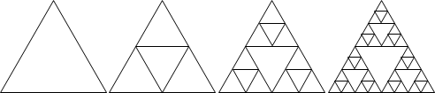
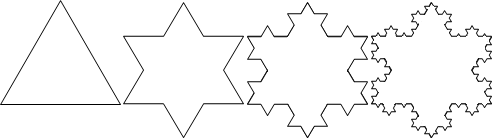
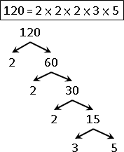
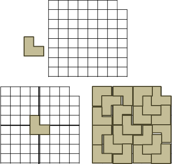
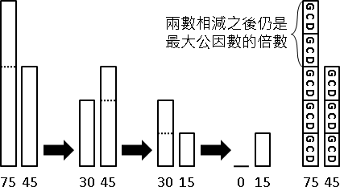

Recursive Method
繁中「遞迴法」、簡中「递归法」。重複運用相同手法，縮減問題範圍，直到釐清細節。
UVa 10994 10212 10471 10922
範例：碎形（Fractal）
利用相同手法繪圖，繪圖範圍越來越精細。
圖中的碎形稱作Sierpinski triangle。凡是尖端朝上的正三角形，就在當中放置一個尖端朝下的正三角形；放置之後，圖形就變得更細膩，範圍就變得更小了。

圖中的碎形稱作Kosh snowflake。一條邊三等分，去除中段，朝外補上兩段，形成尖角。

圖中的碎形稱作Pythagorean tree。不斷繪製正方形、直角三角形，看起來像是一棵茂密的樹。
UVa 177 10609
範例：質因數分解（Integer Factorization）
不斷抽取出質因數，使數值不斷變小，直到成為質因數。

範例：L形磁磚
有一個邊長為2的3次方的正方形，右上角缺了一角邊長為1的正方形。現在要以L形磁磚貼滿這個缺了一角的正方形，該如何貼呢？

巧妙地將一塊L形磁磚放在中央的位置，就順利的把正方形切成四個比較小的、亦缺了一角的正方形。接下來只要遞迴處理四個小正方形，就解決問題了。
這個問題也可以改成缺口在任意一處，各位可以想想看怎麼解。
UVa 10230
範例：輾轉相除法（Euclid's Algorithm）
兩個數字輪流相除、求餘數，最後就得到最大公因數（greatest common divisor, gcd）。相信大家小時候都有學過。

我們可以把最大公因數想像成磚塊、把兩個數字都看成是最大公因數的倍數。
兩數相減所得的差值，一定是最大公因數的倍數。更進一步來說，兩數相除所得的餘數，一定是最大公因數的倍數。輾轉相除法的過程當中，兩數自始至終都是最大公因數的倍數。
運用這個性質，我們把兩數相除、求餘數，使得原始數字不斷縮小，直到得到最大公因數。真是非常巧妙的遞歸法！
注意到，遞推法、遞歸法，不等於程式語言中的迴圈、遞迴。遞推法、遞歸法是分析問題的方法，用來得到計算過程、用來得到演算法。至於編寫程式時，我們可以自由地採用迴圈或者遞迴。
範例：過橋問題（Bridge and Torch Problem）
月黑風高的夜晚，有一座不長不短的獨木橋，只能同時容兩人併行。
此時正好有四個寂寞難耐、悲苦淒涼，事實上是窮極無聊的四個人路經此地。他們手邊僅帶著一支手電筒，想要通過這危險的獨木橋。那橋下可是暗潮洶湧，一失足成千古恨，奔流到海不復回。
幸好四人閒閒沒事就常走這座橋，對路況簡直熟悉到不行，閉著眼睛走都可以，於是乎四人知道自己過橋分別需時1分鐘、2分鐘、5分鐘、10分鐘。但是不管他們的腳程不可思議的快、莫名其妙的慢，四人都是貪生怕死之徒，手上沒有握著手電筒的話，誰都不敢過橋；四人也都是視財如命之徒，就是誰也不想浪費錢，去附近的便利商店買支手電筒，寧可摔到水裡隨波逐流環遊世界去。
最後他們只好協議說，一次兩人同時持手電筒過橋，再請其中一人送回手電筒，沒事做的人就在橋邊哭爹喊娘等手電筒回來，如此一來四人最終都能夠順利過橋。
兩人同時過橋時必須配合走得慢的人的速度，請問全員過橋最快要多久時間？
有一些規矩你是知道的，例如不能把手電筒用丟的丟過河，不能四個人疊羅漢一起過橋，不能把橋拆了做木筏之類的。
題目終於說完了，現在來談解題手法：
腳程快的人送手電筒回來那是最好的；相對地，腳程慢的人就應該讓他留在彼岸不要回來。不管先走後走，人人都還是要過橋，所以先試試看把腳程最慢的人送到對岸吧！
當人數眾多，至少四人時，令A與B是最快與次快，C與D是次慢與最慢。讓最慢的兩個人過橋主要有兩種方式，第一種是AB去A回、CD去B回，第二種是AD去A回、AC去A回，至於其它方式所花的時間恰好跟這兩種方式一樣。採用比較快的那一種方式，讓最慢的兩個人過橋之後，問題範圍就縮小了。
UVa 10037
遞推法、遞歸法，一體兩面，同時存在。
遞推法與遞歸法恰好顛倒：遞推法是針對已知，逐步累積，直至周全；遞歸法是針對未知，反覆拆解，直至精確。
遞推法是由小到大，遞歸法是由大到小。
範例：秦九韶演算法（Horner's Rule）
遞推法是不斷配x，擴增已知；遞歸法是不斷提x，減少未知。
a * x^2 + b * x^1 + c
Iterative Method:
{a} * x^2 + b * x^1 + c
{a, *x} * x^1 + b * x^1 + c
{a, *x, +b} * x^1 + c
{a, *x, +b, *x} + c
{a, *x, +b, *x, +c}
Recursive Method:
{a * x^2 + b * x^1 + c}
{a * x^2 + b * x^1}, +c
{a * x^1 + b}, *x, +c
{a * x^1}, +b, *x, +c
{a}, *x, +b, *x, +c
雖然遞推法與遞歸法的推理方向是相反的，但是遞推法與遞歸法的計算方向是一樣的，兩者都是由小範圍算到大範圍。
Iterative Method:
a, *x, +b, *x, +c
Recursive Method:
a, *x, +b, *x, +c
UVa 498 10268
範例：爬樓梯
眼前有五階樓梯，一次只能踏一階或踏兩階，那麼爬到五階總共有哪幾種踏法？例如(1,1,1,1,1)是其中一種踏法，(1,2,2)是另一種踏法。
這個問題可以用遞推法，也可以用遞歸法。
首先採用遞推法。試著只爬少少的幾階樓梯，觀察一下踏法。
爬到一階的踏法：很明顯的只有一種，(1)。
爬到兩階的踏法：有兩種，(1,1)和(2)。
爬到三階的踏法：因為一次只能踏一階或踏兩階，所以只可能從第一階或從第二階踏上第三階。只要綜合(爬到一階的踏法,2)與(爬到兩階的踏法,1)，就是爬到三階的踏法。
爬到四階的踏法：同理，綜合(爬到兩階的踏法,2)與(爬到三階的踏法,1)即得。
遞推下去，就可求出爬到五階的踏法。
Forward Iterative Method:
爬到一階 (1)
爬到兩階 (1,1) (2)
爬到三階 即是(爬到一階,2)與(爬到二階,1)
(1,2)
(1,1,1) (2,1)
爬到四階 即是(爬到二階,2)與(爬到三階,1)
(1,1,2) (2,2)
(1,2,1) (1,1,1,1) (2,1,1)
爬到五階 即是(爬到三階,2)與(爬到四階,1)
(1,2,2) (1,1,1,2) (2,1,2)
(1,1,2,1) (2,2,1) (1,2,1,1) (1,1,1,1,1) (2,1,1,1)
前面是採用上樓梯的順序進行遞推，由第一階遞推到第五階。也可以採用下樓梯的順序進行遞推，由第五階遞推到第一階。
Backward Iterative Method:
降到四階 (1)
降到三階 (1,1) (2)
降到二階 即是(2,降到四階)與(1,降到三階)
(2,1)
(1,1,1) (1,2)
降到一階 即是(2,降到三階)與(1,降到二階)
(2,1,1) (2,2)
(1,2,1) (1,1,1,1) (1,1,2)
降到平面 即是(2,降到二階)與(1,降到一階)
(2,2,1) (2,1,1,1) (2,1,2)
(1,2,1,1) (1,2,2) (1,1,2,1) (1,1,1,1,1) (1,1,1,2)
有一些問題，比如爬樓梯問題，雙向都可以遞推。數值由小到大的方向稱為「正向」或「順向」（forward），數值由大到小的方向稱為「反向」或「逆向」（backward）。
接著採用遞歸法。由踏出的最後一步開始分析。
要「爬到五階」，最後一步一定是踏上第五階。要踏上第五階，只可能從第四階和第三階踏過來，也就是綜合(爬到四階的踏法,1)與(爬到三階的踏法,2)。
但是我們尚不知如何「爬到四階」和「爬到三階」，所以只好再分別研究「爬到四階」與「爬到三階」。不斷追究到「爬到一階」與「爬到兩階」的時候，就能確認答案了！
Forward(?) Recursive Method:
爬到五階 即是(爬到四階,1)與(爬到三階,2)
爬到四階 即是(爬到三階,1)與(爬到二階,2)
爬到三階 即是(爬到二階,1)與(爬到一階,2)
爬到兩階 (2) (1,1)
爬到一階 (1)
當然也可以雙向遞歸。就不贅述了。
範例：格雷碼（Gray Code）
Iterative Method:
GrayCode(n-1)的每個數字，最高位數加一個0。
GrayCode(n-1)的每個數字，高位數與低位數整個顛倒，然後在最高位數加一個1。
兩者銜接起來就是GrayCode(n)。
Recursive Method:
GrayCode(n)的每個數字，分成兩類。
第一類最高位數是0，把最高位數拿掉後，即形成GrayCode(n-1)。
第二類最高位數是1，把最高位數拿掉後，即形成GrayCode(n-1)。
也可以用最低位數為主，進行遞推、遞歸，生成順序不同的Gray Code。Gray Code具有循環的特性，有多種遞推、遞歸方式，不分正向與逆向。